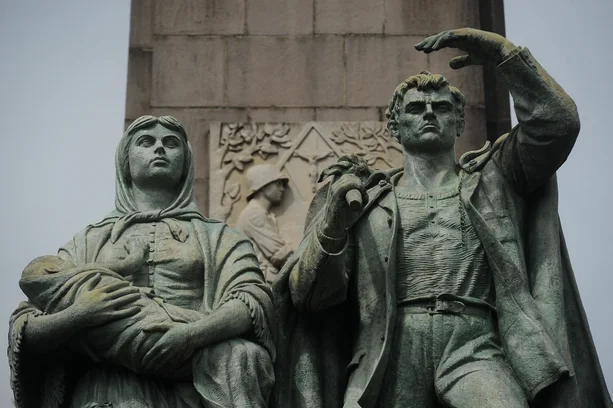
Monumento ao Imigrante
Quem chega a Caxias do Sul pela BR-116 é imediatamente saudado por uma obra de arte colossal que domina a paisagem urbana: o Monumento Nacional ao Imigrante. Projetado pelo renomado escultor gaúcho Antônio Caringi e inaugurado em 1954 pelo presidente Getúlio Vargas, este complexo é um tributo solene à força, resiliência e coragem de todas as etnias que ajudaram a erguer o Brasil.
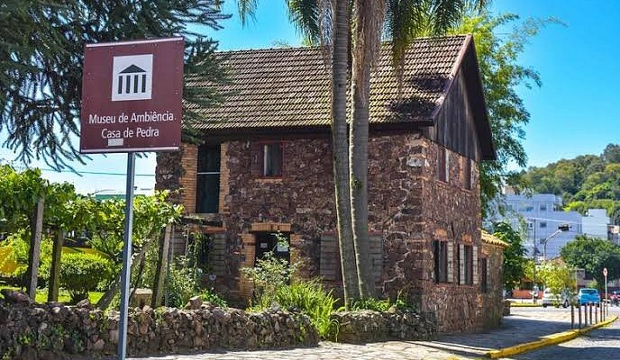
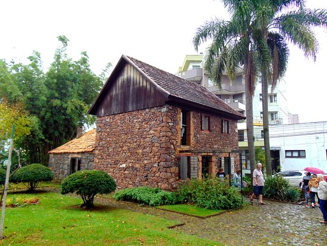
Casa de Pedra
Se você deseja compreender a verdadeira essência da Serra Gaúcha, o seu roteiro precisa passar pelo Museu de Ambiência Casa de Pedra. Esta charmosa e robusta edificação do final do século XIX é a única construção do gênero que restou de pé dentro da área urbana de Caxias do Sul, servindo como um testemunho real da coragem e simplicidade dos primeiros colonos italianos.

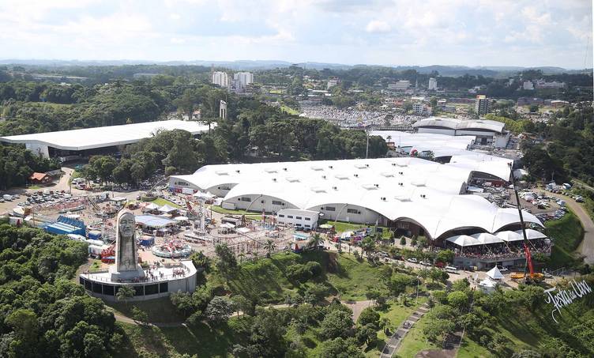
Parque da Festa da Uva
Se existe um lugar que resume a alma, a história e a alegria da Serra Gaúcha, esse lugar é o Parque de Eventos Mário Bernardino Ramos. Famoso por sediar a icônica Festa Nacional da Uva, este imenso complexo de mais de 360 mil metros quadrados funciona como um parque turístico aberto o ano inteiro.

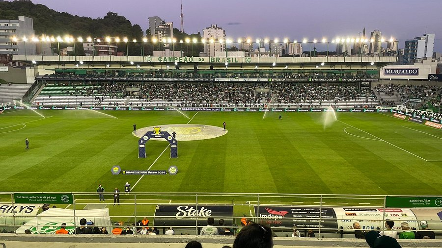
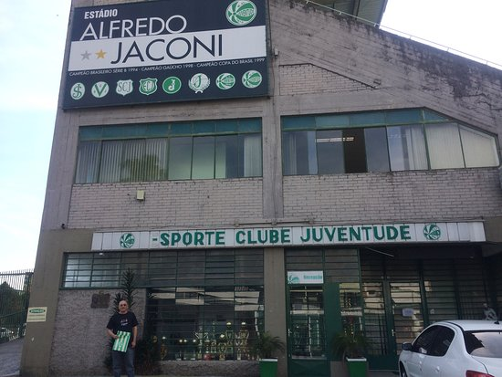
Estádio Alfredo Jaconi
Inaugurado em 1975, o "Jaconi" é um dos palcos mais tradicionais do futebol brasileiro. Conhecido por sua atmosfera única — onde a famosa neblina da Serra Gaúcha (o "Jaconeve") frequentemente se faz presente —, visitar o estádio é mergulhar na identidade e no orgulho do povo caxiense.
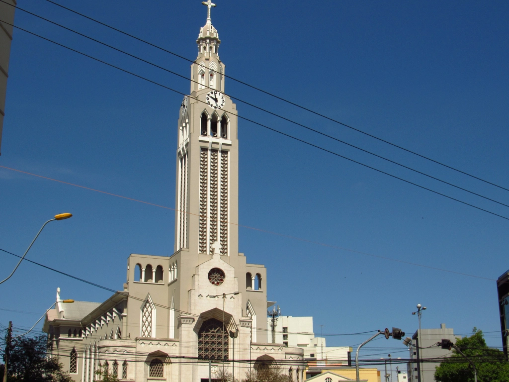
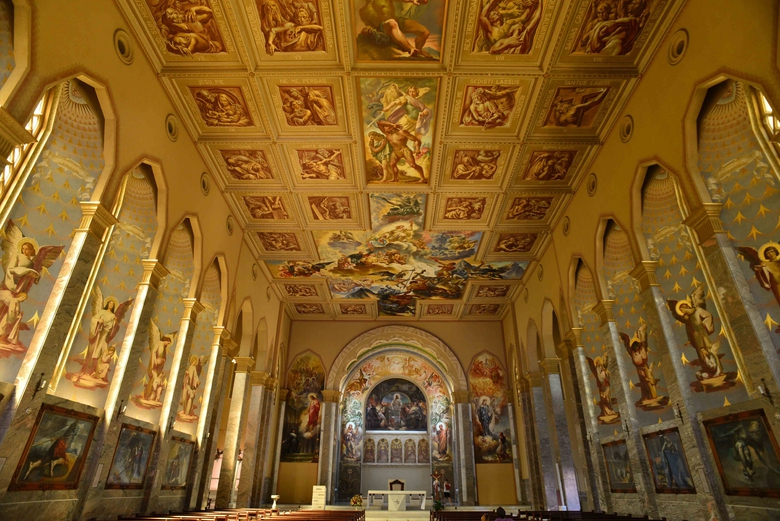
Paróquia São Pelegrino
A Igreja de São Pelegrino é um templo católico localizado em Caxias do Sul, no estado do Rio Grande do Sul, Brasil. Sua história está vinculada aos primórdios da imigração italiana e à fundação da cidade, e o edifício tem várias obras de arte em seu interior, com destaque para os painéis de Aldo Locatelli.
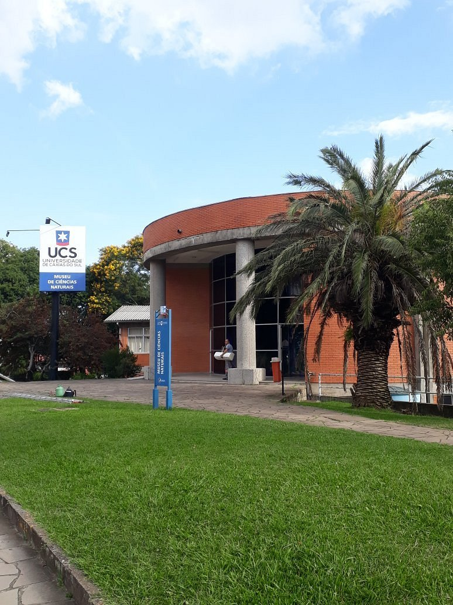
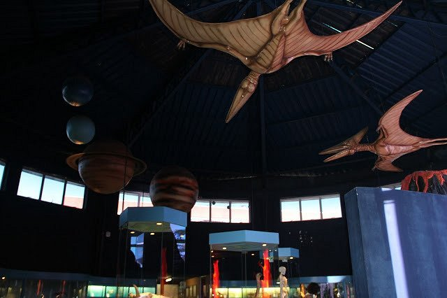
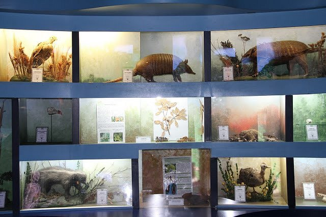
Museu de Ciências Naturais - UCS
O Museu de Ciências Naturais da Universidade de Caxias do Sul é um centro de estudos na área das ciências biológicas, com finalidades acadêmicas, científicas, culturais e de difusão do conhecimento. A entrada é gratuita. Visitas guiadas de grupos escolares devem ser agendadas.